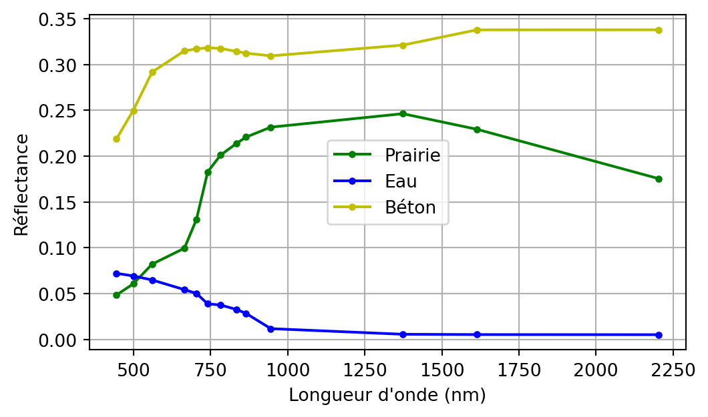
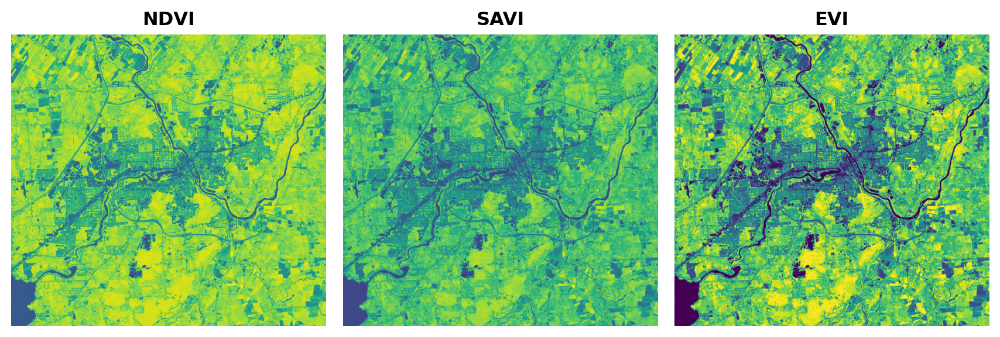
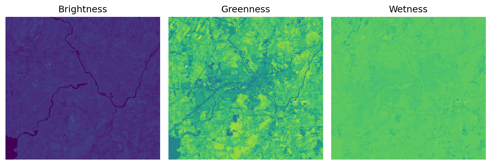
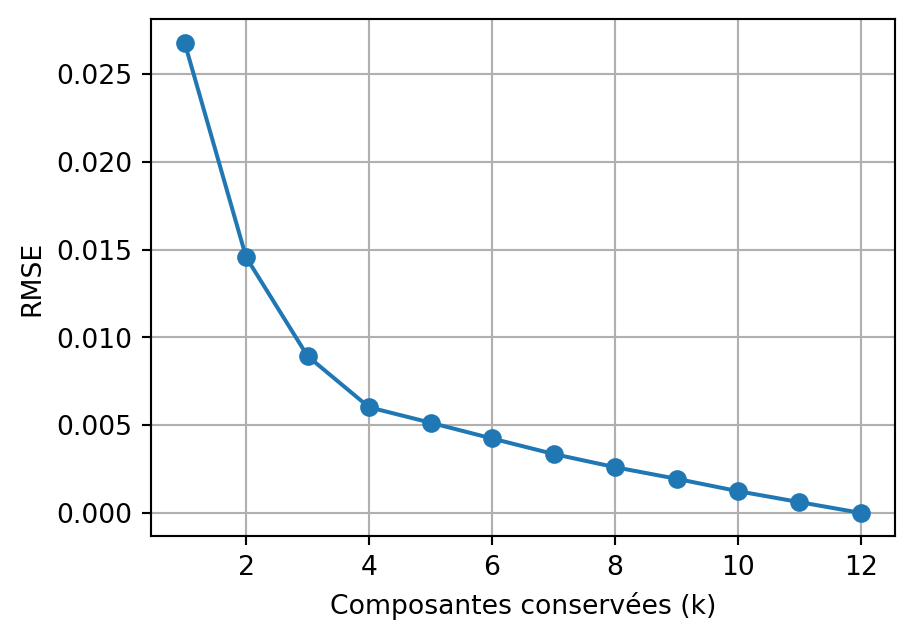

('band', 'y', 'x')Chapitre 3 — Traitement d’images satellites avec Python
spyndexspyndex (Awesome Spectral Indices) : calcul d’indices spectrauxRGBNIR_of_S2A.tif, sentinel2.tif (12 bandes), carte.tifASCIIdata_splib07b_rsSentinel2base = '../ASCIIdata_splib07b_rsSentinel2'
def lire(f):
with open(f) as fh:
return [float(s.replace(' ', '')) for s in fh.read().split('\n')[1:] if s.strip()]
wl = [w*1000 for w in lire(f'{base}/S07SNTL2_Wavelengths_Sentinel2_(13_bands)_microns.txt')]
prairie = lire(f'{base}/ChapterV_Vegetation/S07SNTL2_Rangeland_C03-004_S08%_G27%_ASDFRa_AREF.txt')
eau = lire(f'{base}/ChapterL_Liquids/S07SNTL2_Water+Montmor_SWy-2+0.50g-l_ASDFRa_AREF.txt')
beton = lire(f'{base}/ChapterA_ArtificialMaterials/S07SNTL2_Concrete_GDS375_Lt_Gry_Road_ASDFRa_AREF.txt')
fig, ax = plt.subplots(figsize=(6, 3.4))
ax.plot(wl, prairie, 'g.-', label='Prairie'); ax.plot(wl, eau, 'b.-', label='Eau'); ax.plot(wl, beton, 'y.-', label='Béton')
ax.set_xlabel("Longueur d'onde (nm)"); ax.set_ylabel('Réflectance'); ax.legend(); ax.grid(True)
plt.show()
spyndex (Awesome Spectral Indices) : 200+ indices (optiques et radar)spyndex)| Sentinel-2 | B02 | B03 | B04 | B08 | B11 | B12 |
|---|---|---|---|---|---|---|
| spyndex | B (bleu) | G (vert) | R (rouge) | N (PIR) | S1 (SWIR1) | S2 (SWIR2) |
spyndex suppose ces noms de bandes ; on renomme les coordonnées xarray avant le calcul :
L’indice le plus connu, à partir du rouge (\(R\)) et du proche-infrarouge (\(N\)) :
\[ NDVI = \frac{N - R}{N + R} \]
\[ EVI = G \times \frac{N - R}{N + C_1 \times R - C_2 \times B + L} \]
SAVI : facteur de correction du sol (\(L\)) pour un couvert clairseméEVI : corrige en plus l’effet de l’atmosphère via la bande bleue (\(B\)) [@Jensen2016]computeIndexfrom rasterio import plot
idx = spyndex.computeIndex(
index=["NDVI", "SAVI"],
params={"N": img_s2.sel(band="N"), "R": img_s2.sel(band="R"), "L": 0.5}
)
evi = spyndex.computeIndex(
index=["EVI"],
params={"N": img_s2.sel(band="N"), "R": img_s2.sel(band="R"), "B": img_s2.sel(band="B"),
"g": 2.5, "C1": 6, "C2": 7.5, "L": 1}
)
fig, ax = plt.subplots(1, 3, figsize=(9, 3.2))
plot.show(idx.sel(index="NDVI"), ax=ax[0], title="NDVI")
plot.show(idx.sel(index="SAVI"), ax=ax[1], title="SAVI")
evi_lo, evi_hi = np.nanpercentile(evi, [2, 98])
plot.show(evi, vmin=evi_lo, vmax=evi_hi, ax=ax[2], title="EVI")
[a.axis('off') for a in ax]; plt.tight_layout(); plt.show()
carte.tif)# df : indices calculés aux points échantillonnés, une colonne "Land Cover"
idx = spyndex.computeIndex(
index=["NDVI", "NDWI", "NDBI"],
params={"N": df["N"], "R": df["R"], "G": df["G"], "S1": df["S1"]}
)
idx["Land Cover"] = [nom_classes[l] for l in df["class"].tolist()]
import seaborn as sns
g = sns.PairGrid(idx, hue="Land Cover")
g.map_lower(sns.scatterplot); g.map_upper(sns.kdeplot, fill=True, alpha=.5)
g.map_diag(sns.kdeplot, fill=True); g.add_legend()@)tc_coeffs = np.array([
[ 0.3037, 0.2793, 0.4743, 0.5585, 0.5082, 0.1863], # Brightness
[-0.2848, -0.2435, -0.5436, 0.7243, 0.0840, -0.1800], # Greenness
[ 0.1509, 0.1973, 0.3279, 0.3406, -0.7112, -0.4572], # Wetness
])
tc_bands = ["B", "G", "R", "N", "S1", "S2"]
X_tc = img_s2.sel(band=tc_bands).data.reshape(len(tc_bands), -1)
brightness, greenness, wetness = (tc_coeffs @ X_tc).reshape(3, *img_s2.shape[1:])
fig, ax = plt.subplots(ncols=3, figsize=(9, 3.5))
for a, im, t in zip(ax, (brightness, greenness, wetness), ("Brightness", "Greenness", "Wetness")):
a.imshow(im); a.set_title(t); a.axis('off')
plt.tight_layout(); plt.show()
np.linalg.eigh)cube = img_s2.to_numpy()
B, H, W = cube.shape
X = cube.reshape(B, H * W).T
X_c = X - X.mean(axis=0)
valeurs, vecteurs = np.linalg.eigh(np.cov(X_c, rowvar=False))
ordre = np.argsort(valeurs)[::-1]
valeurs, vecteurs = valeurs[ordre], vecteurs[:, ordre]
ratio = valeurs / valeurs.sum()
print("Variance expliquée (5 premières) :", ratio[:5].round(3))Variance expliquée (5 premières) : [0.829 0.121 0.032 0.01 0.002]def erreur_reconstruction(k):
proj_k = composantes[:k].reshape(k, -1).T
X_approx = proj_k @ vecteurs[:, :k].T + X.mean(axis=0)
return np.sqrt(np.mean((X - X_approx) ** 2))
erreurs = [erreur_reconstruction(k) for k in range(1, B + 1)]
fig, ax = plt.subplots(figsize=(5, 3.5))
ax.plot(range(1, B + 1), erreurs, 'o-')
ax.set_xlabel("Composantes conservées (k)"); ax.set_ylabel("RMSE"); ax.grid(True)
plt.show()
spyndex : 200+ indices, nomenclature de bandes (N, R, G…)Chapitre suivant : Transformations spatiales
Traitement d’images satellites avec Python